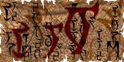
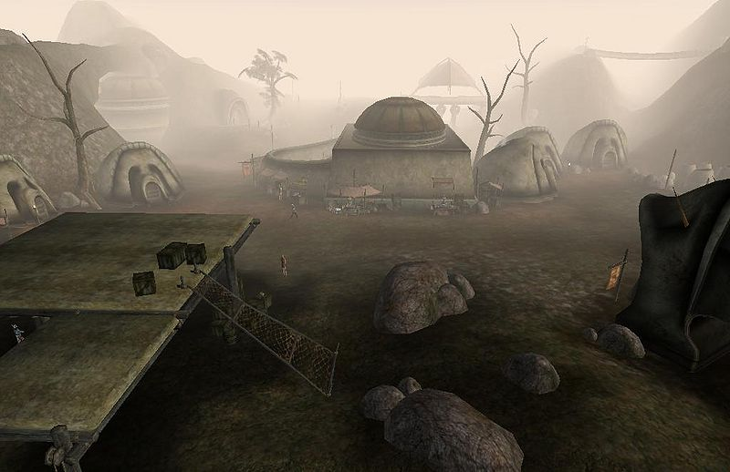
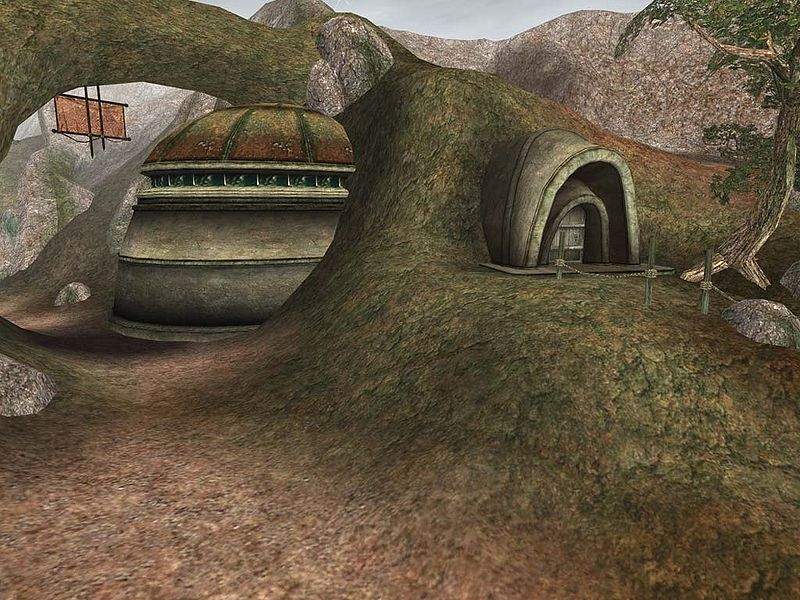
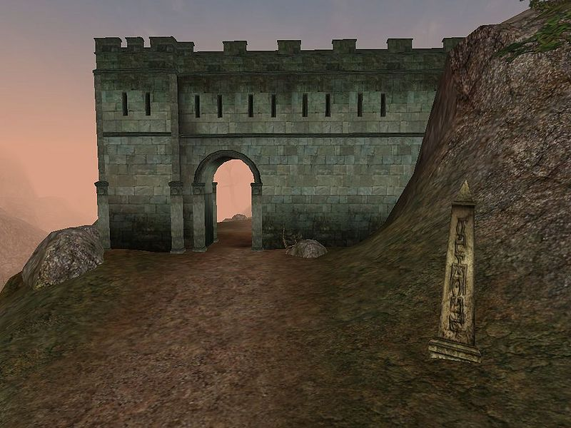

| Gnisis |
| Alignment: Imperial |
| Region: West Gash |
|
Transport:
Almsivi Intervention:
Divine Intervention:
Silt Strider:
|
Services:
|
|  |
|  Southern City Gates of Caldera |
|  The Governor's Hall |
|  Ghorak Manor |
Gnisis (also spelled G'nisis) is the largest town in the northwestern area of Vvardenfell. It offers many of the comforts of home for city-dwellers on their first trip into the wilds. The town is built on a small plain on a hillside, below a large eggmine. There is a Tribunal Temple, home of the Ash Mask of Vivec, and one of the stops on the Pilgrimages of the Seven Graces. The Imperial Legion has built a tiny Imperial fort as well, the northernmost in all of Vvardenfell. Little more than a wall built into a steep hillside, Fort Darius houses an Imperial Cult altar, Legion smith and troop barracks, but most of the actual Legion functions take place either in the town tavern, or in a neighboring Redoran building rented by the Imperial Legion. The Deathshead Legion garrison stationed here is composed mainly of Orcs and Imperials, and is commanded by General Darius. The town's civilian population consists mainly of Dark Elves.
Situated above the Ouada Samsi, the square is surrounded by the cave dwellings and Redoran-style houses of miners and commoners. Hetman Abelmawia, the village elder, is located in his hut. He sells a Gnisis Eggmine Pass as well as Scrolls of Daerir's Blessing, which cures Blight on target (Kwama Queens come to mind). On the riverbank is the Silt Strider with routes that go as far south as Seyda Neen.
The Imperial Legion has rented the Barracks from House Redoran. Optio Bologra is a drillmaster there. A trap door in the cellar leads to Gnisis' secret Talos Cult base. The Madach Tradehouse offers sundries; General Darius can also be found here.
This temple offers a small selection of services. Along the temple wall are a few merchants―a smith and a clothier. Shrines of St. Llothis and St. Rilm are found here.
The real attraction is the Shrine of the Mask (a.k.a. Shrine of Justice), wherein is stored Vivec's Ashmask, accessed via a hidden panel (which opens if you bring the right offering: a Potion of Cure Common Disease) in the shrine. Touching the real mask causes it to cast a combined Cure Blight and Cure Common Disease spell on you. It also grants you the spell Vivec's Touch, which will cure the same two diseases on touch for only 10 Magicka (the cost of such a spell would normally be 115 Magicka). This spell is primarily of use in the Gnisis Eggmine quest, though having it permits you to create a Cure Blight Disease on Self immediately with the help of Spellmaker Mehra Drora in the same facility. A replica of the Mask is seen on the altar behind the pillar, but it doesn't do anything. Neither mask can be picked up, so do not fear the Guards.
The Velothi Tower Arvs-Drelen at the outskirts of Gnisis is the home to a Telvanni noble. Baladas Demnevanni has opted out of the rat-race for power within that house and values his privacy, although a Telvanni in service to Master Aryon may be able to persuade him to join the Council. Several crates hold interesting, leveled loot. There are guest quarters close to the entrance, if you don't mind the rats (one storage room holds two skeletons).
The city's economy depends largely on the trade from the Gnisis Eggmine, and its Kwama Queen has caught The Blight. Relations between the polyglot Imperial, Orc, and Dark Elf staff are strained following the recent murder of a Dark Elf miner. Recently, the excavations of the Kwama miners have uncovered an entrance into the lost Dwemer ruin of Bethamez.
Little more than a wall built into a steep hillside, the fort itself is tiny. A barracks room offers bunk beds. Downstairs, an Imperial Cult shrine and, oddly enough, a Shrine of the Tribunal provide healing and solace. Chaplain Ogrul is the local Imperial Cult priest. A Legion smith and two healers and trainers round out the services.
Baladas Demnevanni is located at the top of his tower. General Darius, the only person that can let you join the Imperial Legion, can be found in the Madach Tradehouse. Hetman Abelmawia is the village steward for Hlaren Ramoran, Redoran councilor and lord of Gnisis.
The only fast-travel is by Silt Strider to and from Ald'ruhn, Khuul, Maar Gan or Seyda Neen.
Difficult roads lead north over gorges to Ald Velothi and Khuul. The coastal road to Gnaar Mok isn't much better.
Ald'ruhn is a long way away through the West Gash and the Foyada in the Ashlands.